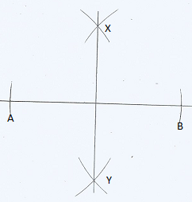
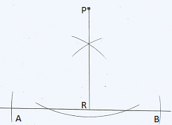
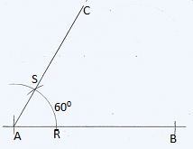
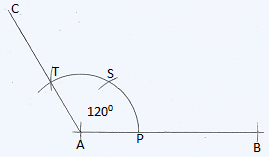
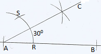
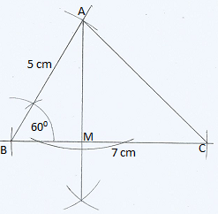
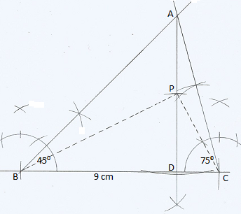
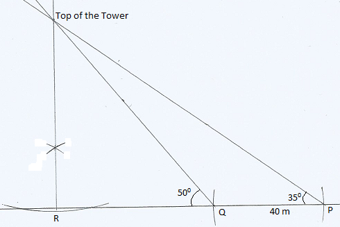

Chapter 17: Geometrical Constructions
Geometrical Constructions
Note: To circumscribe a circle around a triangle, we bisect two sides of the triangle and the point of intersection is the center of the circle.
To inscribe a circle inside a triangle, we bisect two angles of the triangle and the point of intersection is the center of the circle.
Geometrical construction is the drawing of accurate figures. The figures are constructed using a pair of compasses and a ruler only
Perpendicular Lines
Figure 17.1 shows XY as a perpendicular bisector of a given line AB

Figure 17.2 shows PR, a perpendicular from point P to a given line AB.

Constructing Angles of \(60\,^{\circ}, \,120\,^{\circ},\, and \,30\,^{\circ}\)
In this section, we will consider the construction of some angles with special sizes using a pair of compasses and a ruler only.
Constructing a \(60^0\) Angle
Step 1: Draw the line AB.
Step 2: Place the tip of the compass at A and draw an arc of any measure to cut the line AB at some point (say R).
Step 3: Keeping the width unchanged, place the tip of the compass on point R and draw another arc cutting the arc drawn in the previous step at some point (say S)
Step 4: Connect the points A and S with a straight line and extend it to form a line AC.
The measure of the \(\angle BAC\) is \(60^0\)

Constructing a \(120^0\) Angle
Step 1: Draw the line AB. {Step 2: Place the tip of the compass at A and draw an arc of any measure to cut the line AB at some point (say P). Step 3: Keeping the width unchanged, place the tip of the compass on point P and draw another arc cutting the arc drawn in the previous step at some point (say S) Step 4: With the same width place the tip of the compass at point S and draw another arc cutting the arc drawn in step 2 at some point (say T) Step 5: Connect the points A and T with a straight line and extend it to form a line AC.
The measure of the \(\angle BAC\) is \(120^0\)

Constructing a \(30^0\) Angle
To construct the angle of \(30^0\), Construct the angle of \(60^0\) as described above and then bisect it as shown below.
The measure of the \(\angle BAC\) is \(30^0\)

Solved Examples
Using a ruler and pair of compasses only, construct triangle ABC in which \(AB = 5cm, BC = 7cm\) and angle \(ABC =60 \,^{\circ}\). Drop a perpendicular from A to meet BC at M. Measure AM and AC. \((3mks)\)

\[AM=4.4\pm 0.1 \,cm\] \[AC=6.3\pm 0.1 \, cm\]
Use a ruler and a pair of compasses only for all constructions in this question.
a) Construct a triangle ABC in which \(BC=9\, cm\), angle \(ABC=45^0\) and angle \(ACB=75^0\) (2mks)
b) Measure AB and AC. \((2mks)\)
c) At A drop a perpendicular to meet BC at D. \((1mk)\)
d) Measure AD and hence calculate the area of triangle ABC. \((3mks)\)
e) Mark a point P on DA produced such that the area of triangle BPC is half the area of triangle ABC. \((1mk)\)
f) Complete triangle BPC and measure PC \((1mk)\)
a) 
b) \[AB=10\pm 0.1\, cm\]
\[AC=7.4\pm 0.1\,cm\]
d) \[AD=7.1\pm 0.1\,cm\] Area of Triangle \(ABC=31.95\pm 0.45\, cm^2\)
c) \[PC=4.1\pm 0.1\,cm\]
Use a ruler and a pair of compasses only for all constructions in this question.
a) Construct triangle PQR in which QR=8.5cm, PQ=7cm and angle PQR\(=60^0\) \((3 mks)\)
b) Measure PR and angle QPR. \((2 mks)\)
c) Construct a circle which is inscribed inside triangle PQR. \((4mks)\)
d) Measure the radius of this circle. \((1 mk)\)
a) 
b) \[PR=7.8\pm 0.1\, cm\] \[\angle QPR=70 \pm 1^0\]
c) Radius\(=2.2\pm 0.1\,cm\)
a) Using a pair of compasses and a ruler only construct a triangle ABC such that $AB= 6.5cm, BC = 5cm $ and angle \(ABC = 135\,^{\circ}\) \((2mks)\)
b) Construct the height of triangle ABC in (a) above taking AB as the base, hence calculating the area of triangle ABC. \((2mks)\)
Using compass and ruler only construct a triangle ABC such that AB 7cm, BC = 6cm and angle \(ABC = 67.5\,^{\circ}\) measure the length of AC. \(( 4mks)\)
Use a ruler and a pair of compasses only for all the constructions in this question.
a) Construct a triangle PQR in which PQ=9 cm, QR=6 cm and angle PQR\(=30^0\) \((3mks)\)
b) From P drop a perpendicular to meet QR produced at
- \((1mk)\)
c) Measure PS and hence calculate the area of triangle PQR. \((2mks)\)
d) Locate a point T on SP produced such that the area of triangle QTR is \(\frac{4}{3}\) times the area of triangle PQR. \((2mks)\)
e) Complete triangle QTR and measure RT and angle TQR. \((2mks)\)
Use a ruler and a pair of compasses only for all constructions in this question.
a) Construct triangle ABC in which BC=AC=7 cm and angle ACB\(=37.5^0\) \((3mks)\)
b) Measure AB. \((1mk)\)
c) From A drop a perpendicular to meet BC produced at
- \((1mk)\)
d) Measure AD and hence calculate the area of triangle ABC. \((2mks)\)
e) Mark a point P on AD such that the area of triangle PBC is half the area of triangle ABC. \((1mk)\)
f) Complete triangle PBC and measure angle PBC \((2mks)\)
Use a ruler and a pair of compasses only for all constructions in this question.
a) Construct triangle PQR in which QR=5cm, PR=7 cm and PRQ\(=150^0\) \((3mks)\)
b) Measure PQ and angle PQR. \((2mks)\)
c) From P drop a perpendicular to meet QR produced at
- \((1mk)\)
d) Mark a point T on DP produced such that the area of triangle TQR is twice the area of triangle PQR \((2mks)\)
e) Complete triangle TQR and measure angle QRT. \((2mks)\)
Use a ruler and a pair of compasses only for all constructions in this question
a) Construct triangle ABC in which BC=7 cm, and angle ABC\(=45^0\) and angle ACB\(=60^0\). \((3mks)\)
b) Measure AB and AC \((2mks)\)
c) Construct a circle that touches BC at B and passes through
- \((4mks)\)
d) Measure the radius of the circle \((1mk)\)
Use a ruler and a pair of compasses only for all constructions in this question.
a) Construct triangle ABC in which BC=7cm, angle ABC=22.50 and angle ACB\(=120^0\). \((4mks)\)
b) Measure AC \((1mk)\)
c) Produce AB to D and AC to E and bisect angle CBD and angle BCE. \((2mks)\)
d) Construct a circle which touches all three sides AD, BC, and AE. \((2mks)\)
e) What is the radius of this circle? \((1mk)\)